This page details early versions of the original Slendytubbies.
Multiplayer Tests
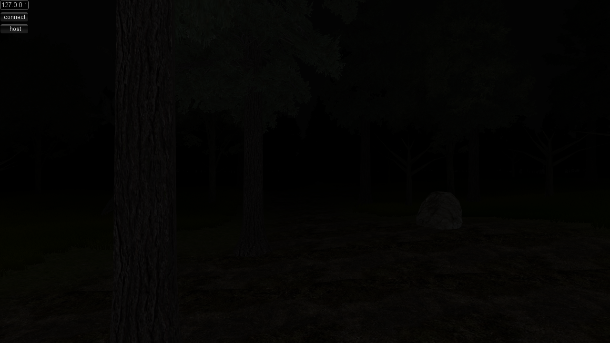
These early builds of the original Slendytubbies are for testing multiplayer. There are two versions of this build; one for Competitive mode, and the other for Versus mode. Both builds have their own differences. The Competitive build is dated November 27, 2012, while the Versus build is dated December 2, 2012. Despite the different build versions, players can cross-play on them with minor issues. For instance, one can join as a victim using the Versus build on a Competitive build, but their playermodel will look strange. Additionally, Versus Tinky Winky cannot be seen by or interact with Competitive build players. These builds are similar to the alphas before them and share differences with them.
Gameplay
While this build is intended for testing multiplayer, it is playable offline. It plays identically to the original Slendytubbies with minor differences in-between builds. As the name implies, players can play co-operatively by connecting to a IP address or hosting a game when launching one of the builds.
Differences from the final game
- In both builds, the window header says "Slendytubbies Project" instead of "Slendytubbies".
- There is no title screen. Instead, a simple IP address connection system in the corner takes its place.
- Chat is not present.
- The game still lacks intermission periods.
Competitive
- Noo-Noo is white.
- Corpses of the Teletubbies are missing.
- Strangely, there is no skybox.
Versus
v0.5 Alpha
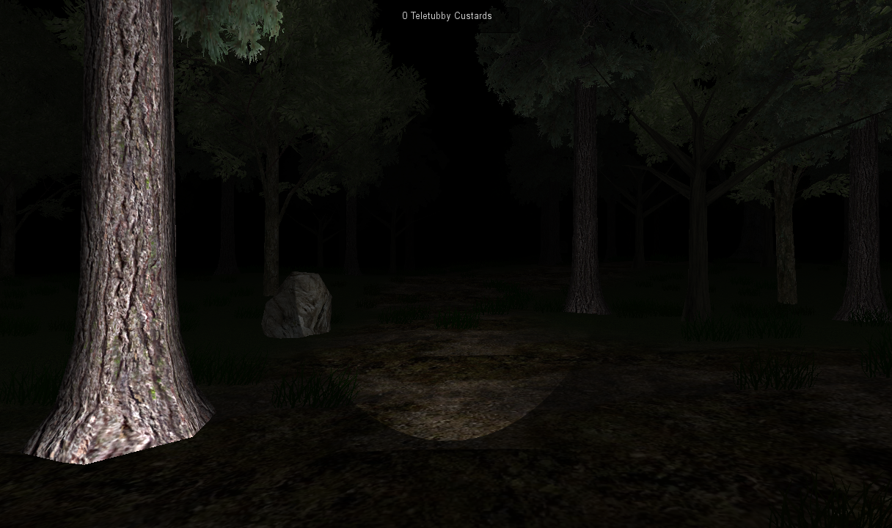
This alpha version of Slendytubbies differs greatly when compared to the final. It was leaked on a unknown date and is available for download here. The prototype is dated November 15, 2012.
Some of the Unity files in the data folder date back to November 3, 2011, which is presumably when development of Slendytubbies started (although it is unlikely due to the original Slender releasing on June 26th, 2012).
Gameplay
The alpha plays similarly to the final version; albeit with a multitude of changes, mainly consisting of the visuals to Tinky Winky's behavior. In this build, Tinky Winky is first put in a stalking-like state where he appears normal until he gets close to the player, where he will then start screaming and harming the player if they look at him. Players must be more careful of Tinky Winky as there is a (invisible) health bar that depletes when the player looks at him in his aggressive state. Other than that, the game is lacking in multiple aspects; such as the inclusion of a title screen or other time periods.
Differences from the final game
- There is no title screen, other than the default Unity configuration when launching the game. After the Unity screen, it boots the player to the Night variation of Main Land.
- There are a few Carrots scattered across the land. One is near the spawn, while the others can be found by exploring the map.
- The teletubbies are twice the size of the player, which can lead to one believing that they are playing as a human.
- The game's graphics are vastly different compared to the final.
- There is no "intermission" when entering Main Land like in the final game. This would be the basis for future installments.
- Tinky Winky acts differently in the Alpha. He'll slowly creep up on the player in his dormant state, looking similar to his pre-infection self and if he gets closer to the player, he'll scream and transform into his hostile state while "moving" erratically. While he is in his dormant state, he is harmless and the player can look at him safely.
- There is no victory screen in this game. Once the player gets all custards, they have to die to end the game.
- The flashlight looks more simple compared to the final.
- Some trees do not have collision.
- There is no kill screen. If the player looks at Tinky Winky in his hostile state for too long then the game will crash.
- The player cannot sprint. Additionally, they cannot crouch, but they can jump.
- There are invisible walls throughout Main Land. The final replaced them with mountains.
- The game shows how many Teletubby Custards are collected on the top of the screen.
- Laa-Laa cannot get up and jumpscare the player when they get close to her corpse.
- Noo-noo is absent from the house, and is nowhere to be seen in the Alpha.
- Dipsy's corpse bleeds slightly differently and more noticeably compared to the final game.
- Teletubby beds are not present in the house.
- The "cave" looks rather strange in the Alpha.
- Pop-ups are present and function similarly to the final.
- However, one unique pop-up not present in the final game is present in this version, which is the "YOUR Next" pop-up. It was re-added in Anniversary Edition.
- Falling trees are absent in this build.
- Tinky Winky always faces the player in the alpha, a behavior not exhibited by anyone else in the series. Classic Tinky Winky's "attack animation" in Slendytubbies 3 might be reminiscent of this.
- Unlike in the full release, the custards have collision and you have to click on them to pick them up. When a custard is picked up it plays the pop-up sound.
v1 Alpha
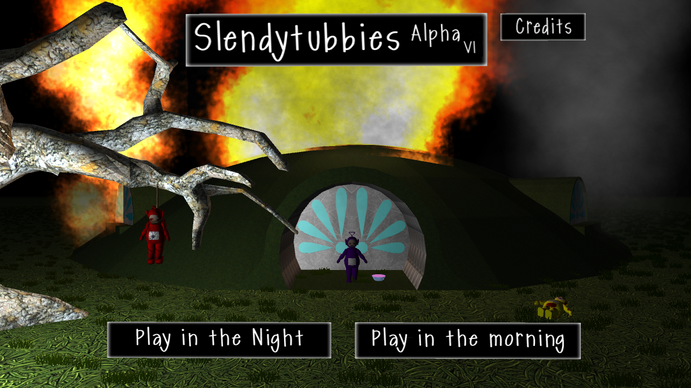
A later version of Slendytubbies. It is similar to the build preceding it, albeit with more additions. This build is dated November 22, 2012.
Gameplay
Gameplay is still mostly the same as the v0.5 Alpha, but with the addition of a title screen and a morning mode.
Differences from the final build
- The title screen is different from the final.
Trivia
- The final game's header image for the Unity configuration are taken in one of the earlier versions.
- If one looks closely at the bottom left corner of the uncut header, they can see what appears to be a health HUD.
- Oddly, the health mechanic appears to be still present in the alphas, as the player can still risk dying to Tinky Winky even if they're looking at him at individual times.
- If one looks closely at the bottom left corner of the uncut header, they can see what appears to be a health HUD.
Gallery
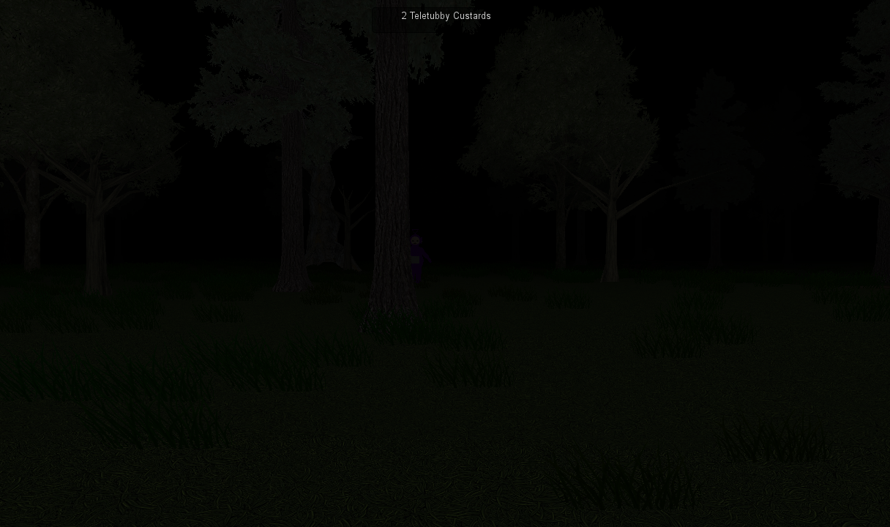
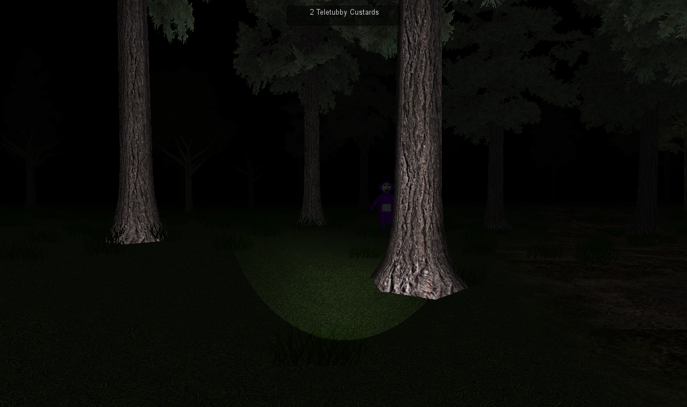
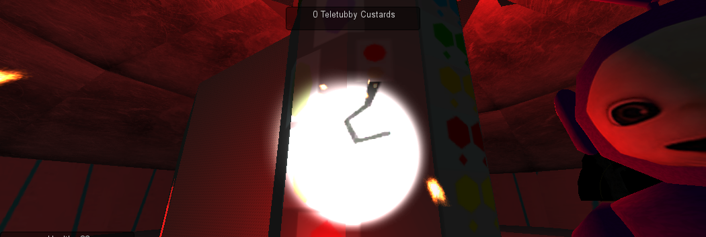
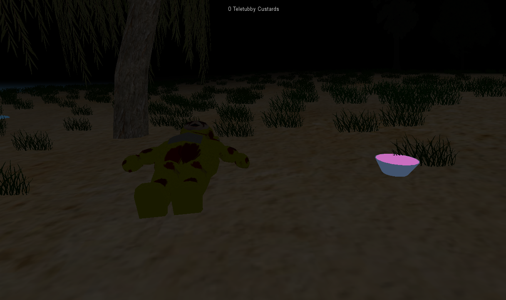
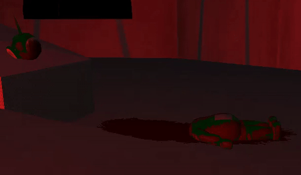
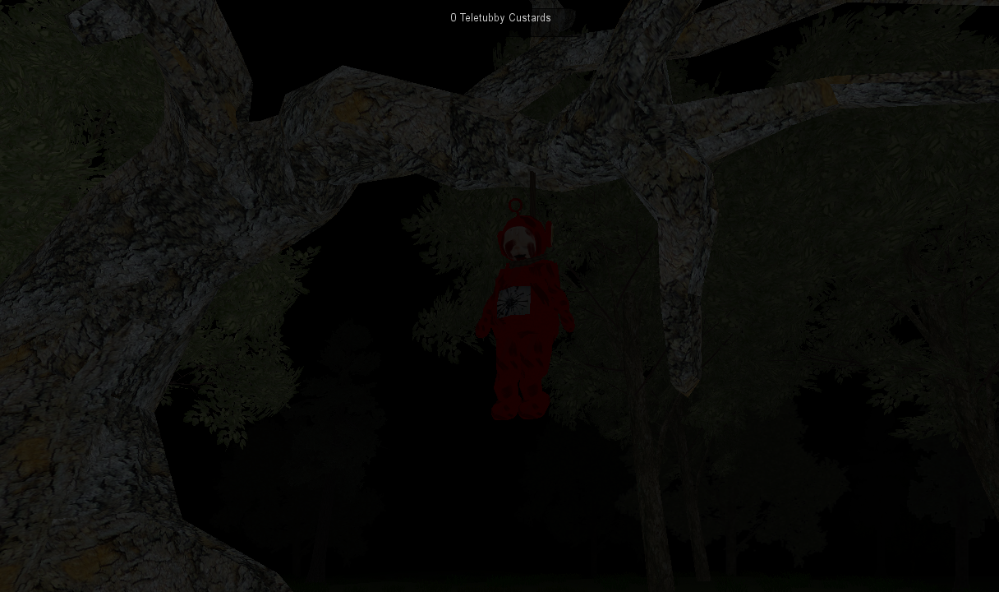
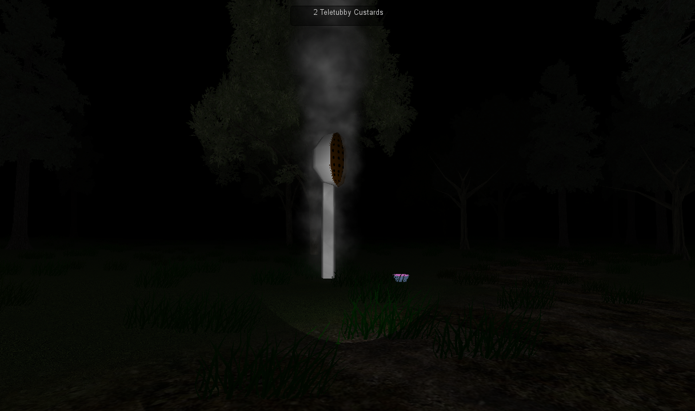
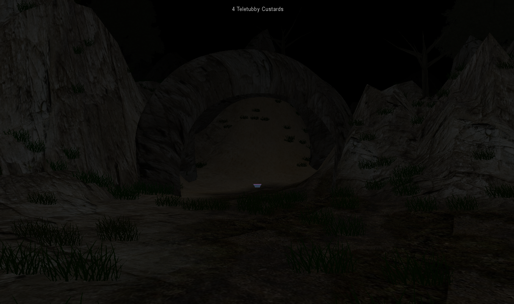
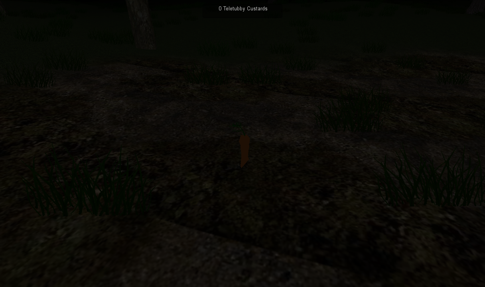
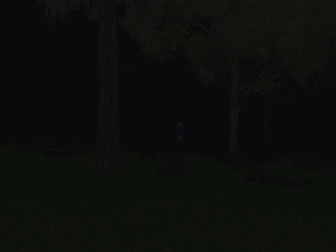
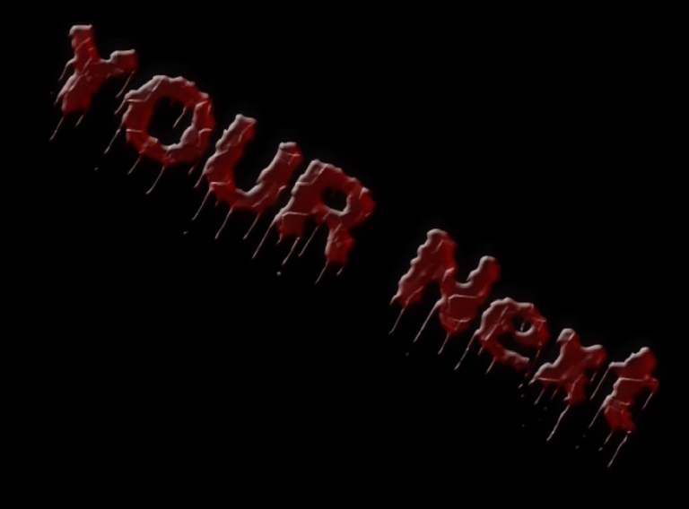
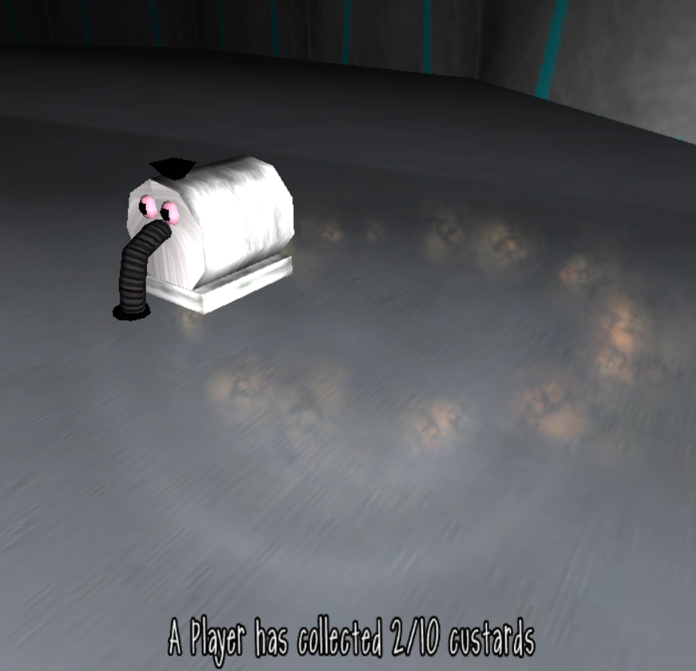
Audio
Some unique sound effects are present in the game's files.
text by: Slendytubbies Wiki